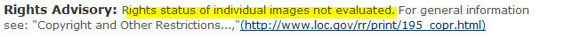
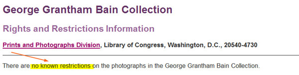

Copyright and Other Restrictions
That Apply to Publication/Distribution
of Images:
|
||||||||||||||||||||||||||||||||||||||||||
This document provides guidance on some of our most frequently asked questions about rights to images in Prints & Photographs Division (P&P) collections: 1. Can I use
an image that I've found in P&P's
collections? (This discussion
includes information on how
long copyrights last) The information below applies to use of material in the United States. Use outside the U.S. is governed by the laws of the country in which the material is being used. |
1. Can I use an image that I've found in the P&P collections?
The answer to this question involves considering other questions:
- What do you know about the rights
associated with the image? [more
about this]
and - How do you plan to use the image? (For instance, if your use falls under the "fair use" clause in the copyright law, copyright will be less of an issue, though you will need to pay attention to any donor restrictions) [more about this]
Sometimes the answer is very clear. Other times the answer isn't clear at all.
In all cases, it is the researcher's obligation to determine and satisfy copyright or other use restrictions when publishing or otherwise distributing materials found in the Library's collections.
1a. What do you know about the rights associated with the image?
When the Prints & Photographs Division has information about the rights associated with an image or a collection of images, it conveys that information to researchers through catalog records and/or rights statements.
Can you find:
-
An associated catalog record (text giving data about the specific image) in the Prints & Photographs Online Catalog? [more about catalog records]
- A rights and restrictions statement giving information about rights? [more about rights and restrictions statements]
If no catalog record data or rights statement is available, you will need to find the rights information related to the image or collection yourself. [more about doing your own evaluation]
Notes Found in P&P Catalog Records
| Catalog records may contain: | |
|---|---|
When P&P staff have received or gathered information pertinent to rights for individual images, notes are added to the text of the catalog records to explain what is known.
- Does the catalog record associated with the image include text that says "No known restrictions on publication"?
No known restrictions on publication means that the Library is unaware of any restrictions on the use of the image. These are generally the situations where this phrase is used: 1. There was a copyright and it was not renewed or the term of copyright has expired (see section below, "How Long Copyrights Last". Example: 2. The image is from a late 19th or early 20th century collection for which there is no evidence of any rights holder:
These facts do not mean the image is in the public domain, but do indicate that no evidence has been found to show that restrictions apply. Example: |
-
Does the catalog record include text that says “Publication may be restricted” and refer to a rights statement? See "Rights and Restrictions statements" below.
Example:
Does the catalog record include text that says “May be restricted: Information on reproduction rights available in LC P&P Restrictions Notebook” (or similar wording). This refers to a notebook that is now online in the form of rights statements. See "Rights and Restrictions Statements," below.
Example:
-
Does the catalog record include text that says "Rights status not evaluated. For general information see 'Copyright and Other Restrictions...' (http://lcweb.loc.gov/rr/print/195_copr.html)." This means the Library has not received or gathered information pertaining to the rights status of the image (see "Doing Your Own Evaluation," below).
Example:
 -
What if there is a note with different wording from the above examples or no note at all? Catalog records have been created over a long period of time, so wording of rights information may vary. If a record does not contain a rights note, it may mean the Library has not received or gathered information pertaining to the rights for the image and you will need to gather that information yourself (see "Doing Your Own Evaluation," below).
Individual Rights and Restrictions Statements
Rights and Restrictions statements written by P&P for specific collections or artists are available online. Look on the Rights and Restrictions Information page or search in the site search box on that page for the name of:
- the collection from which the image comes, or
- the artist who made it.
If there is no rights statement for a collection, we may not have analyzed it yet. The information below is intended to help you interpret the language found in rights and restrictions statements.
If images were copyrighted and copyright has expired, we say “Images in this collection are considered to be in the public domain.”
Example:
[view full statement]-
If collectively the images meet the criteria for the "no known restrictions" designation, we say "no known restrictions" in the rights and restrictions statement (see information about the meaning of "No known restrictions" above).
Example:

[view full statement] -
If images have been placed in the public domain by the creator or rights holder, we say that the images are in the public domain in the rights and restrictions statement.
Example:
[view full statement] -
If images are restricted and the Library has information on how to contact the rights holder for permission, we provide that information.
Example: Ann Telnaes Rights and Restrictions Information
[view full statement] - If the donor of the collection
has specified restrictions, we provide
that information.
- Sometimes the donor’s restriction is on a certain type of use. Example: LOOK Magazine Photograph Collection [view statement]
- Sometimes the donor has specified the length of time that the collection is restricted. Example: Brigitte Stelzer [view statement]
-
Rights statements are sometimes confusing because images within a collection were sometimes made or gathered under varying circumstances. While the vast majority of images in a collection may be analyzed one way, there may be exceptions, and a few images may be analyzed another way.
Example:
U.S. Farm Security Administration/Office of War Information/Office of Emergency Management/Resettlement Administration Black & White Photographs Rights and Restrictions Information
[view full statement]Example:
Theodor Horydczak Collection Rights and Restrictions Information
[view full statement]
Doing Your Own Rights Evaluation
When the Prints and Photographs Division has not provided catalog notes or rights statements, you will need to find the rights information related to the image or collection yourself. You'll need to gather whatever information you can about the image.
(Reminder: in all cases, it is the researcher's obligation to determine and satisfy copyright or other use restrictions when publishing or otherwise distributing materials found in the Library's collections.)
| This section covers: | |
|---|---|
Was the Image Made by the U.S. Government?
Is there a credit on the image that indicates
a U.S. federal agency or military
service?
Example:
Works created by officers and employees of the United States Government are not eligible for copyright protection within the United States. 17 U.S.C. § 105. For more information about U.S. government works and copyright, see: https://www.usa.gov/government-works.
Or Do You Have (Or Can You Get) Copyright Registration Information for the Image?
Evaluating the rights status of an item is pretty straightforward when the name of a copyright claimant and the copyright registration number and date is found on the image or in the catalog record that describes it.
Example: A catalog record
with copyright date and copyright
registration
number.
Searching for Copyright Information
To determine whether you can get copyright information if it is not in the catalog record or on the item, you can
- search the records of the U.S. Copyright Office yourself, or
- hire someone to perform a search [see, for example, P&P's list of searchers] or
- pay the Copyright Office for a search.
Copyright registrations from 1978 to the present can be searched online (see: "Guide to Searching the Copyright Office Catalog" [pdf]). Further information about copyright searching is available in U.S. Copyright Office Circular 22 [pdf], "How to Investigate the Copyright Status of a Work," and from the Search Division of the U.S. Copyright Office (telephone 202-707-6850). Searches cannot be considered conclusive but will show a good faith effort.
If you find copyright registration information, the next step is to determine how long that copyright protection would last (see How Long Copyrights Last, below)
In the Absence of Copyright Registration Information, Do You Think the Item is Published or Unpublished?
The U.S. copyright law distinguishes between "published" and "unpublished" material, with different terms of copyright applied to each.
Based on what you conclude about whether the work in question is published or unpublished, the next step is to determine how long the copyright protection would last.
How Long Copyrights Last
You can apply facts about the duration of copyright to determine if a copyright has expired or is still in effect. The full copyright law is available from the U.S. Copyright Office web site at http://www.copyright.gov/, as are circulars that explain specific aspects of the law, including these circulars, which deal with duration of copyright:
- Circular 1, Copyright Basics [PDF file; 129 kb]
- Circular 15, Renewal of Copyright [PDF file; 136 kb]
- Circular 15a, Duration of Copyright [PDF file; 187 kb]
- Circular 15t, Extension of Copyright Terms [PDF file; 19 kb]
The following facts are drawn from the circulars listed above:
-
Works published or registered in the U.S. more than 95 years ago are now in the public domain. The simplest calculation (if you prefer to deal in round numbers) is to: add 100 to the year the item was published/registered for copyright and subtract 4. The item will enter the public domain on January 1 of that year [see #1 in the chart of examples below].
Note: Starting in the late 1990s and up until 2019, a key date for assessing copyright in the U.S. was the year 1923. That was because, according to the Copyright Act of 1976, works registered for copyright or published with a copyright notice were protected for a maximum of 75 years of copyright protection, assuming the copyrights on the works were renewed (28 years first term plus 47 for the second, if renewed). Public Law 105-298 enacted in October 1998 increased the maximum to 95 years [28 years first term and 67 for the second, if renewed]. Before 1998 the longest amount of time a work could be protected was 75 years, so works before 1923 were no longer protected (1998 minus 75 years equals 1923). When the law changed, the 1923 date was "frozen" and remained so until January 1, 2019.
- Published works copyrighted 95 years ago or less may be under copyright restriction:
-
Published works registered for copyright in the U.S. through Dec. 31, 1963 are now in the public domain unless the copyright was renewed. If the copyright was not renewed, the copyright expired after 28 years. If the copyright was renewed, the item is protected for 95 years from the copyright date. The only way to determine whether the item was copyrighted and that the copyright was renewed is to do a copyright search (see information above about copyright searching ). [see #2-5 in the chart of examples below]
-
Works published with a copyright notice or registered for copyright between January 1, 1964 and December 31, 1977 are generally protected for 95 years [see #6 in the chart of examples below].
-
| If the work was published or registered for copyright in the U.S. in... | Doing the math | In the public domain in the U.S. as of | |
|---|---|---|---|
| 1) | 1923 and the copyright was renewed | 1923+100=2023; 2023-4=2019 | Jan. 1, 2019 |
| 2) | 1924 and the copyright was renewed | 1924+100=2024; 2024-4=2020 | Jan. 1, 2020 |
| 3) | 1936 and the copyright was renewed | 1936+100=2036; 2036-4=2032 | Jan. 1, 2032 |
| 4) | 1961 but the copyright was not renewed | 1961+28=1989 | 1990 |
| 5) | 1961 and the copyright was renewed | 1961+100=2061; 2061-4=2057 | Jan. 1, 2057 |
| 6) | 1965 whether or not the copyright was renewed | 1965+100=2065; 2065-4=2061 | Jan. 1, 2061 |
-
Works created by individuals on or after Jan. 1, 1978 are generally protected for the creator's life plus 70 years. (Circular 1 [pdf], "Copyright Basics," page 4). Works made for hire are protected for longer terms--see the section below on works for hire. For unpublished works where the death date of the creator is not known, the copyright term is 120 years from the date of creation.
Note about copyright notices: For some pre-1989 works, publication without a copyright notice may mean that the item is in the public domain. The criterion of the copyright notice is easy enough to apply to books, but a bit tricky with images, since the original work may have had a copyright notice that was not reproduced on subsequent copies or the copyright may have been on the work in which the image appeared, rather than on the image itself. Images without a copyright notice may still be under copyright. The U.S. Copyright Office Circular 3 [pdf; 125 kb], "Copyright Notice" explains the notice requirements for works published between January 1, 1978, and February 28, 1989 and provides a reference for locating information on the requirements prior to 1978.
If you think the item should be considered unpublished, this guidance from the U.S. Copyright Office applies:
-
Works created before January 1, 1978 but not published or registered by that date are generally protected by copyright law for the life of the creator plus 70 years. (Circular 1 [pdf], "Copyright Basics, " page 4) . For unpublished anonymous works and works where the death date of the creator is not known, the copyright term is 120 years from the date of creation.
-
Works created on or after Jan. 1, 1978 are generally protected for the creator's life plus 70 years. (Circular 1 [pdf], "Copyright Basics," page 4)
Situations Where the Image Was Made "For Hire" or Is an Anonymous or a Pseudonymous Work
-
Works made for hire: One complicating factor is when someone makes an image for someone else (a “work made for hire”). In that case, the party that hired the individual to create the work is considered the author and holds the copyright in that creation. Works made for hire are under copyright for 95 years from publication or 120 years from creation, whichever is shorter. (Circular 1 [pdf], "Copyright Basics, " page 3-4)
-
Anonymous and pseudonymous works: The duration of copyright for works for hire and for anonymous and pseudonymous works is 95 years from publication or 120 years from creation, whichever is shorter. (Circular 1 [pdf], "Copyright Basics, " page 4)
Foreign Works
For use within the United States, the following guidelines apply:
- Works published outside the U.S. but registered for copyright in the U.S. more than 95 years ago are considered to be in the public domain. [Fishman, chapter 18.13 and 18.15]
- For works other circumstances/countries, consult U.S. Copyright Office Circular 38A, "International Copyright Relations."
Use Outside the United States
The use of US copyrighted works outside of the United States is complicated and may be affected by international treaties and the laws of other countries. Consult Circular 38A [pdf], "International Copyright Relations" for more information.Situations Where There is Simply Insufficient Information
Unfortunately, many P&P images lack information on the image or associated with the image (particularly the date of creation or the name of the individual or firm that created the image) to help with rights evaluation.
Example:
Masterpieces of Art building, New York World's
Fair, 1939-1940
-
Request a copyright search, even if you have little information to go on. The paperwork from the Copyright Office could show your good faith effort to establish the rights status of the image.
- Record the type of searching you have done and what you did or didn't find, so you can demonstrate you used due diligence in searching for the rights holder.
It may or may not help to know that the problem is so vexing that the U.S. Copyright Office recently opened an examination of issues related to orphan works, which it defined as those whose owners are difficult or even impossible to locate. (http://www.copyright.gov/orphan/)
What About Copying One of P&P's Images from a Book or Other Published Source?
If you are planning to copy and publish an image from a copyrighted, published source (e.g., a book), you should check with the publisher, since technically it owns the rights to the version appearing in the book--though few publishers realize that or seem to wish to control such copying.
Finding More Guidance
Information is available from the U.S. Copyright Office web site at http://www.copyright.gov/.
The U.S. Copyright Office, the Prints & Photographs Division, and other units of the Library of Congress do not provide legal advice about copyright law. The following resources may be helpful as further guidance:
-
A chart laying out when items pass into the public domain published by the Cornell Copyright Information Center [view chart
 ].
]. The American Society for Picture Professionals Web page, "ASPP's Best Practices for Locating Copyright Owners of Photographic and Visual Art"
-
A book written by professional picture researcher Scott Tambert: How to Use Images Legally http://www.pdimages.com/law/
-
John Schultz and Barbara Schultz, Picture Research: A Practical Guide. N.Y.: Van Nostrand, 1991. [call number: TR147.S38 1991 P&P] This book, for instance, summarized the problem of the lack of precise copyright/publication information when it comes to images:
...Pictures can fall into a murky area where they may or may not be copyrighted. These situations are perilous to the user, and vexing to the picture researcher or permissions researcher who must try to assure the publisher that he owns the legal right to reproduce. When copyright is unknown or ambiguous, publishers have to make calculated risk decisions.... ( p. 216).
- Stephen Fishman, The Public
Domain: How to Find & Use Copyright-free
Writings, Music, Art & More.
2nd ed. Berkeley, CA: Nolo, 2004.
[LC call number: KF3022.Z9 F57
2004]
1b. How do you plan to use the image?
After you have gathered whatever facts are available about the rights associated with the image, consider how you plan to use the image.
| This section covers: | |
|---|---|
-
Could your use be considered “fair use”? Section 107 of the U.S. Copyright law contains a list of the various purposes for which the reproduction of a particular work may be considered “fair,” such as criticism, comment, news reporting, teaching, scholarship, and research. See: U.S. Copyright Office Frequently Asked Questions fact sheet on fair use, https://www.copyright.gov/help/faq/faq-fairuse.html .
-
Some information on privacy and publicity rights is available in the Library of Congress online “Legal” notice at //www.loc.gov/homepage/legal.html#privacy_publicity
Some examples of making use determinations
|
2. This all seems complicated when all I need is for you to sign a form giving me permission!
As a publicly supported institution, the Library of Congress generally does not own the rights to materials in the collections, and it does not charge permission fees for use of material from the collections. We cannot sign permission forms because, with one exception ( the Seagram County Court House Archives), the Prints & Photographs Division does not administer permissions to publish or otherwise distribute material from its collections. For other materials in the division's collections, the only permission you need is what may be required from any copyright owner or donor, independently of the Library.
3. If it displays for me off site does it mean it’s ok to use?
The Library displays jpegs and tiffs offsite for those images for which a rights analysis shows:
- that there are “No known restrictions,” OR
- that the copyright has expired, OR
- that the creator has released his rights OR
- that the creator
has agreed to allow his images
to be
displayed but still retains
the publication
rights.
Example:- Camilo José Vergara photographs [view rights and restrictions statement] OR
- that the vast majority
of images in a large collection
are not restricted,
even though the rights
statement advises about select
cases
where
restrictions might apply;
with these collections,
no one has
ever successfully claimed
such rights.
Examples:- Farm Security Administration/Office of War Information Collection [view rights and restrictions statement]
- Theodor Horydczak Collection [view rights and restrictions statement]
While the overwhelming majority of images that display jpegs and tiffs off-site fall into the first three categories, be sure you haven’t wandered into one of the few collections in the fourth category. Moreover, although the fact that jpegs/tiffs display off-site may offer some clues as to the rights status of an image, you will still need to make your own determination. As always, you need to consider the rights issues, incuding copyright, privacy, publicity and related rights in light of your intended use.
4. How should I credit the Library as the source of the images I’m using?
When material from the Library’s collections is reproduced in a publication or website or otherwise distributed, the Library requests the courtesy of a credit line.
Ideally, the credit will include
- reference to Library of Congress, and
- the specific collection which includes the image, and
- the image reproduction number (negative, transparency, or digital id number).
Such a credit furthers scholarship by helping researchers locate material and acknowledges the contribution made by the Library of Congress.
Example:
Wright Brothers collection, Prints & Photographs
Division, Library of Congress, LC-ppmsca-04598.
When space considerations preclude such a caption, shorter versions may be used.
Examples:- Courtesy of the Library of Congress, LC-USZ62-13459
- LOC, LC-ppmsca-09756
- Library of Congress, C4-2356
Last revised: March 2019.
| The
Library of Congress >> Researchers April 23, 2019 |
Legal | External Link Disclaimer |
Contact
Us: Ask a Librarian |